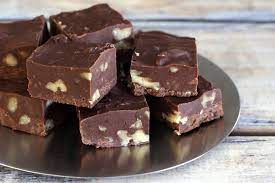

Creamy Chocolate Fudge

Recipe Description
With just 9 ingredients, this fudge is bound to be your holiday dessert Go-To!
Ingredients
- 1 (7 oz) jar marshmallow creme
- 1 1/2 cups white sugar
- 2/3 cup evaporated milk
- 1/4 cup butter
- 1/4 teaspoon salt
- 2 cups milk chocolate chips
- 1 cup semisweet chocolate chips
- 1/2 cup chopped nuts
- 1 teaspoon vanilla extract
Instructions
- Line an 8x8 inch pan with aluminm foil and set aside
- In large saucepan over medium heat, combine marshmallow cream, sugar, evaporated milk, butter, and salt. Bring to a full boil and cook for 5 mins, stirring occasionally.
- Remove from heat and pour in all the chocolate chips. Stir until chocolate is melted and mixture is smooth. Stir in nuts & vanilla. Pour into prepared pan. Chill in fridge for 2 hours, or until firm.